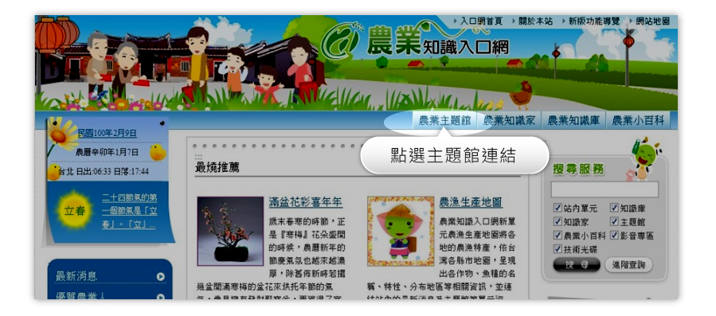

導覽說明
新版農業知識入口網推出「農業主題館」，點選「農業主題館」連結，可瀏覽所有農業主題之專屬主題館。
農業主題館分為農、林、漁、牧、和其他，主題館列表將呈現每個主題館的簡介，您可點選有興趣的主題館進行連結，網站將另開視窗，呈現每個專屬主題館的獨立頁面。
農業主題館-導覽說明
主題館列表頁面
目前農業知識入口網有90個以上不同主題的農業主題館，每個主題館都有豐富的知識文件，您可以依照農、林、漁、牧、和其他分類瀏覽所有的主題館簡介。
查詢功能
您可以利用「主題館查詢」功能來快速的查詢您有興趣的主題館，也可以利用「文章查詢」功能查詢主題館中的知識文件。